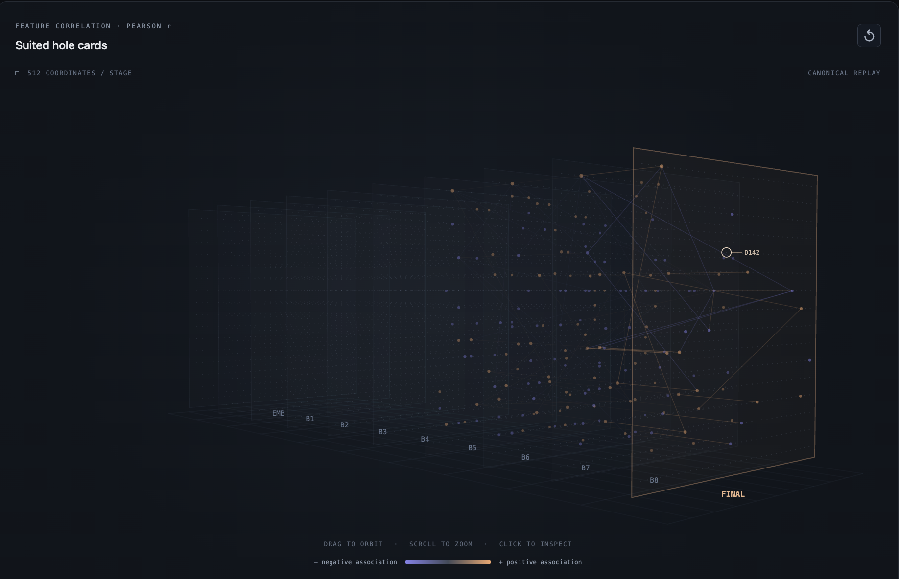

Training a Transformer Model on Poker Solver Output for Fun and (No) Profit
Is bluffing aligned behavior?
Introduction
Poker play is considered game theory optimal when the players converge to a strategy which is not exploitable, meaning no deviation in strategy will provide any advantage to any player. An algorithm was discovered many years ago which pits P players against each other, starting with an equal strategy for every action, and tweaking the chances of taking certain actions until reaching that state of non-exploitability known as Nash equilibrium. Commercial products hide the math and logic behind the solver, which leads the internals to appear as a black box that provides you with perfect strategy. Once we learn how the algorithm works and create our own solver, we can take the patterns in the output and create a transformer model out of them.
TurboFire and NashGPT
TurboFire is a game theory optimal poker solver written in C++. It has none of the creature comforts of a traditional poker solver, such as memory saving techniques or abilities to load custom ranges of hands for you or your opponent. The base project serves as a great foundation for a research, and can be adapted for many different purposes, such as a transformer model. With a bit of work, the actual output of the perfect play of the poker solver could be stored as a large log file, and trained on to create a transformer model. NashGPT is the ~26M parameter model which was trained on the output of the solver, learning the concepts behind game theory optimal strategy in training.
If you haven't played poker, the article will go through the basics of the game, the concepts and algorithms behind game theory optimal poker, and the concepts that can be taken from it! Feel free to skip around the article to your level of interest and expertise - the code for the solver is linked on the bottom. This entire post is human written :)
Poker
You and your opponent, the villain, arrive at the poker table. On the unsturdy poker table there’s a low-grade stench of Rolling Rock, and as you shuffle through the $100 in slightly discolored casino chips sitting in front of you, a few of the $1 chips stick together. The dealer sits down and you’re both dealt two cards.
You have two Aces - an Ace of Spades and an Ace of Diamonds. The best hand in poker. Your opponent stares down at his cards, and their eyes dash over to their pile of chips, and they flick $2 in the middle. You match their bet. There’s $4 in the pot, or the collective amount you’ve both committed.
The dealer places three cards on the table, one at a time: 9 of Diamonds, 5 of Clubs, King of Diamonds.
You bet $3 into the pot. Your opponent freezes, and quickly adds $9 on top, a raise. You think for a few seconds - and announce you’re calling, and slide $6 into the pot in the middle. The dealer announces “flip ‘em”. You’re playing a modified version of poker which stops at the flop (the first set of cards revealed by the dealer) to save time. Normally, there would be 2 more betting rounds, with 2 more cards revealed, known as the turn and river.
(Example: Flop: [9 Diamonds, 5 Clubs, King Diamonds], Turn: [2 Hearts], River: [3 Hearts])
Your opponent slams their cards down: King Hearts, 10 Diamonds. You smile, and reveal your aces - your opponent made a pair, two Kings. Your two Aces, however, slightly outclass his pair of kings.
There’s some slight mumbling on the other side of the table involving expletives, ranges, fish. You’re unsure what free-range aquatic life has to do with poker, but there’s $22 sliding your way, and $11 of it your opponent's money.
Perfect Poker
When playing poker, certain strategies emerge as you play with your opponents. Sometimes you can bluff, and get your opponent to fold, or give up, by betting with hands that are likely worse than your opponents to force a victory. Other times, you try to raise and attempt to get your opponent to put extra money in the pot with a hand worse than the two you are holding.
Setting: A poker room in Las Vegas, Nevada - February 1982
After bluffing to win a hand while discussing double digit mortgage rates, someone at your table asks “How did you know to bluff there?” You think for a few seconds, and mention it was just a gut intuition. In your mind, however, you have a subconscious and abstract grouping of hands in each situation. Some hands, like two aces, cause you to shovel money into the pot. Mediocre hands, like King and Seven of two different suits, your opponent won’t see coming if you make a hand and play it aggressively.
Over the years you lost a lot of money and accumulated countless regrets, but eventually came out with a strategy that seems to beat most opponents. It was a process of trial and error… and that trial and error process could possibly be automated by those fancy new computers you keep hearing in conversations.
Fast forward a few decades, and there are algorithms at your disposal that will automate this process for you. The algorithm only knows the rules of the game, and through a method known as Regret Minimization, a perfect strategy can be found by both players. In the solver discussed in this post, the full algorithm is known as Discounted Counterfactual Regret Minimization.
Regret within the algorithm is used slightly differently than in common vernacular. Regret should be read in this post as “fear of missing out” (FOMO) instead of a decision with negative consequences. Think along the lines of “I regret not asking the professor for extra credit”, where you look counterfactually to the path you didn't take with regret (FOMO) for not choosing it.
DCFR
The algorithm used in the solver described in this blog post is Discounted Counterfactual Regret Minimization [1]. The poker game is defined as a game tree, where each action (check, bet, raise) creates a new branch from the root that grows outward. These are defined as action nodes. The game tree begins to explode as chance nodes are hit, which is when the environment affects the game state. In poker, the environment is a card being drawn from the deck at random. In order to accurately simulate a poker game, we must account for each card drawn from the deck, at both the turn and river, which is (49 choose 2) possible branches. The terminal node occurs when one player folds, or all possible actions end.
Every action is equally weighted, for both the hero and the villain, at the start of the hand. If your possible options are check, call, raise $3, or raise $6, the default strategy requires each one to be taken ¼ of the time. At the terminal node, you calculate your counterfactual value (CFV) for each possible hand in your range (all hands you could be holding) against your opponent's range. Meaning, you see how well your two aces would hold up against all of the possible hands your opponent could be holding, alongside a given board state.
Once your CFV for the terminal node is calculated, you return the vector of values to the previous node. The goal is to see how choosing a specific action (such as check or raise) holds up against the strategy weighted CFV of the node. Your strategy is how likely you were to take an action (¼ to start over 4 actions, in the previous example) and the CFV for each action is weighted against the strategy for that subsequent node.
Regret is calculated as an individual action’s CFV - the weighted average CFV of the node. The node’s CFV is passed up the tree, and then the regret calculation repeats until reaching the game root. The same process occurs for the villain. On the next iteration, instead of the next strategy being equally weighted, it is calculated based on the regret.
Imagine you accumulated -2 regret from checking, 3 regret from calling, 2 from raising $3, and -1 raising $6. You can throw out the regrets that are negative, as those are actions you wish you didn’t take (remember that regret is more like FOMO!) and the positive regret is summed. 3 regret from calling + 2 regret from raising $3, equals 5 total. Then, the strategy is calculated for each action, taking the individual action’s regret and dividing it against the total regret. We would be met with a strategy profile of 0% check, 60% call, 40% raise $3, and 0% raise $6.
Naturally, good actions are rewarded and poor decisions are punished. Some structure will begin to rise in the results, with obvious results such as aces or kings being played aggressively. From this article by GTO Wizard there is a picture (full credit to them) of some peculiar hands being played aggressively alongside our typical ‘top tier’ hands. The algorithm will find weird pockets of hands that have properties that make them good enough to play aggressively as bluffs. As a human, you may say things such as “well… if I hold a jack the opponent is less likely to have one, so we can play aggressively!” to make sense of the algorithm. You can apply these concepts in game, but the solver finds them mathematically!

Discounting
The last part of the algorithm is the D in DCFR, which refers to discount. The algorithm can learn incorrect biases very early on in the training cycle, which can take a very long time to train out. By discounting earlier runs, it can help mitigate a scenario with a large regret dominating future strategies, such as an initial 500,000 regret accumulation for a check and 1 regret for raising $3. The discounting is applied after each iteration, with multiple variables for calculating decay. The paper describing the algorithm is linked at the bottom of the page!
Transformer Models
(Author’s note: I am not an AI researcher, and self taught the concepts listed below using the internet and AI. If anything is incorrect or misstated - feedback is appreciated!)
Think back earlier to the description of the hand in the Las Vegas casino. Over time, you realize there’s patterns in optimal strategy, and there are certain opportunities where bluffing your hand and playing aggressively tends to pay off. These patterns emerged inside of DCFR, and can be learned to obtain a personal GTO-like strategy. If a human is able to learn these strategies, so can a transformer model. Although this may not be the most optimal way to build an AI to play poker, it’s fun and an excellent educational experience.
One of the most common phrases heard in AI-related debates is that an LLM is a next token predictor. While that’s technically true, it’s an incredibly reductive take that is often used in the context of downplaying the power of transformers. It’s meant to diminish the technology into a fancy version of autocomplete on the iPhone, with no real reasoning abilities.
A token is the tip of an iceberg, an abstract representation of countless entries which hold many concepts within its high dimensional space. As it flows down through the many layers of the model, certain neurons light up based on the context provided by the other tokens.
NashGPT (Implementation)
For NashGPT, a small token set was defined alongside a distribution of the probability of actions represented as tokens used for the model’s training. We start with defined <START> and <HOLE> tokens (the hole cards being our cards) alongside the flop, and the subsequent actions taken by the players. The next token to be predicted is either a hero’s action, or a villain’s response. In the below example, we have a two-tone (two suits) flop with a mediocre hand. The model will train off the distributions of the possible actions with bias towards the higher values. With time and energy, the concepts hidden within these lines of training data are learned.
{
"prompt": "<START> <HOLE> 7 c 2 c <FLOP> A s Q h 7 s <BETTING>",
"action_probs": {
"HERO_CHECK": 0.96824,
"HERO_BET40": 0.003636,
"HERO_BET100": 0.005142,
"HERO_ALLIN": 0.022982
}
}By running similar hands (flushes, one-pairs, etc) through the model, certain correlates between neurons will appear. General board texture can be learned (monotone vs rainbow flops) or general responses to certain actions by an opponent. These are all held within the same 512 dimensions of the last token, showing a token’s many contexts allows for the learning of abstract concepts.
Training
It took four pre-train runs to get the model into a usable state. I have two articles explaining the differences between each iteration. I named each of them NashGPT 1.0, 1.5, 1.6 and 1.7, which is described within this article. The first version was sloppy - I did not separate suits and ranks as I should have, which caused the model to have a difficult time learning concepts such as rainbow or monotone flops. (ie <FLOP> As Qh 7s). It was originally double the size, at around ~57M parameters, which was far too large for the amount of data that we were providing. It also cut off many hands, and did not include any compression techniques.
NashGPT 1.5 was a slight improvement - twice the amount of training data with half the amount of parameters. The concept of hand isomorphism was introduced, where duplicate hands that are represented identically were removed in order to attempt to learn the concepts rather than accidentally overfitting to the training data, or memorizing the answers. Two examples would be the following flops (<HOLE> 7c 2c <FLOP> As Qh 7s) and (<HOLE> 7d 2d <FLOP> Ac Qs 7c) . Although different suits are used, they are isomorphic in the type of board that is represented.
Unfortunately I still managed to overfit the model, as I did not include a random subset of hands that the model would verify against in between training. Excluding hands helps to verify the model isn’t just copying the answers and acting as a fancy (and expensive) form of compression to the original training data.
NashGPT 1.6 addressed the overfitting issue by holding out 155 complete canonical flops during training and testing the model on those unseen boards. Passing non-canonical hands directly into the model performed much worse, which showed that suit canonicalization was still required rather than something the model had learned on its own. The NashGPT 1.6 results compare fresh solver output against canonical and non-canonical model inputs.
The final version, NashGPT 1.7, separated out suits and the rank from the tokens - meaning it was trained on our own cards and flops that looked like 7 d 2 d <FLOP> A c Q s 7 c. This improvement allowed the model to properly learn the concept of suits vs ranks, and begin to properly learn board texture.
Learned Concepts
It’s possible to see how well a model learned a certain concept. For example, in a regular language model, if we pass in the phrase “I’m going to order a cheesesteak” and various other sentences referencing the word cheesesteak, we can see what neurons are activated surrounding the token or within the token. These concepts likely relate to the actual word, alongside food or potentially hunger.
Since our ‘prompt’ looks like the following: (<START> <HOLE> 7 c 2 c <FLOP> A s Q h 7 s <BETTING>) we can run many hands of a similar grouping in the model and look into the residual stream for the <BETTING> token. If certain neurons keep lighting up, then we know it managed to learn a concept!
Influenced by Lyra
Because of the model’s small size, we can very easily peek inside and visualize these shared concepts. Using a similar concept to Lyra’s Neuron Explorer, we can visualize how these connected concepts flow throughout the layers:
(Obviously, this was vibe-coded - it is meant to be a fun visualizer to how these concepts are stored)
Patterns in poker that are natural to humans are picked up by the model. There are certain activations associated with a previous player raising, or calling, or any general action. In the above picture, the model was able to discern against a monotone flop from a rainbow flop (As Qs 7s vs Ah Qd 7s) for example, and in the picture below the concept of two suited hole cards are highlighted.

The model was able to retain a decent amount of strategy compared to the solver. These observations show a highlight a few important items.
First, transformers are able to hold much more complex information than just the face value of the token shown to the user. <BETTING> doesn't just tell the model to produce an action - it holds an internal representation of the type of hands being held, the board texture, and even loose concepts of bluffing. Scaling up to real language models, they can seemingly represent emotions and understand the patterns of languages they're translating, both natural and programming.
Second, transformer models seem to act as some form of compression. It was seen in the overfit version of NashGPT that had essentially compressed the training data into its weights, and utterly failed when presented with hands it did not see in training. This compression can hold the actual patterns if trained correctly!
Finally, scaling models is incredibly expensive. Each training run only had cost me a few dollars on an Nvidia A40, but had I added turn and river data into the mix, the training run would have gotten incredibly expensive. Holding all of the training data (potentially terrabytes worth) would have been expensive on its own, without the VRAM required for training the model on each street!
Before concluding, here are some examples taken from theNashGPT 1.6 run:
NashGPT 1.6 Results
Solver, canonical, and non-canonical action probabilities from the NashGPT 1.6 writeup.
Depth 0
Prompt: <HOLE> Ah Kh <FLOP> Qh Jd 7c <BETTING>
| Action | Solver | Canonical | Non-canonical |
|---|---|---|---|
HERO_CHECK | 94.39% | 91.67% | 82.55% |
HERO_ALLIN | 4.54% | 5.63% | 3.63% |
HERO_BET100 | 0.94% | 1.43% | 12.16% |
HERO_BET40 | 0.14% | 1.27% | 1.66% |
Depth 1
Prompt: <HOLE> Jc 7c <FLOP> 9h 8h 6d <BETTING> OPP_CHECK
| Action | Solver | Canonical | Non-canonical |
|---|---|---|---|
HERO_ALLIN | 92.53% | 74.32% | 52.18% |
HERO_BET40 | 2.84% | 14.14% | 2.59% |
HERO_BET100 | 2.83% | 10.93% | 24.30% |
HERO_CHECK | 1.79% | 0.61% | 20.94% |
Depth 2
Prompt: <HOLE> Js 5s <FLOP> Ah 7h 2h <BETTING> HERO_CHECK OPP_BET40
| Action | Solver | Canonical | Non-canonical |
|---|---|---|---|
HERO_FOLD | 94.89% | 93.20% | 81.61% |
HERO_ALLIN | 2.95% | 4.29% | 6.64% |
HERO_CALL | 1.21% | 1.29% | 10.79% |
HERO_RAISE_3X | 0.95% | 1.21% | 0.96% |
Depth 3
Prompt: <HOLE> Js Ts <FLOP> Ah Kd Qc <BETTING> OPP_CHECK HERO_BET40 OPP_RAISE_3X
| Action | Solver | Canonical | Non-canonical |
|---|---|---|---|
HERO_CALL | 50.00% | 53.02% | 99.98% |
HERO_FOLD | 50.00% | 46.98% | 0.02% |
Depth 2 (paired flop)
Prompt: <HOLE> Ah Qh <FLOP> Kd Kh 4c <BETTING> HERO_CHECK OPP_ALLIN
| Action | Solver | Canonical | Non-canonical |
|---|---|---|---|
HERO_FOLD | 92.78% | 61.05% | 17.60% |
HERO_CALL | 7.22% | 38.95% | 82.40% |
Why?
In December 2025 I had reached a unique situation in my college career. Drexel, my alma mater (go dragons!) would not let me graduate without taking a senior seminar, and I had no other credits to take. For six months, while waiting for graduation, I had the privilege of time to work on various projects across different domains while having to dedicate only a few hours a week to a single class.
I played a lot of poker in college, and wanted to learn how solvers work. Due to the explosion in LLM usage due to the rise of capable agents around the same time, I attempted to learn as much as I could about LLMs with no background in machine learning. While learning about both, it seemed that a transformer model could be trained on anything, including poker solver output!
Almost a year later, I tried to compile the story of the journey I had taken to create these projects. The final C++ version of the solver was written with minimal LLM input after many iterations as a way to properly learn the algorithm after LLM-assisted iterations. The transformer model has much more assistance from AI. It was a fun experience, and although I am still no expert in any domain I had crossed, I had an incredible time with the process. The TurboFire repo is at the bottom, and I am still in the process of finding a proper way to host the model and the code surrounding it.
References
- Noam Brown and Tuomas Sandholm. Solving Imperfect-Information Games via Discounted Regret Minimization. 2019. Read the paper (PDF).
- GTO Wizard. Range Morphology. Range image reproduced above via the original image URL.
- Lyra. Neuron Explorer.
- Nick Ingravallo. TurboFire source code.